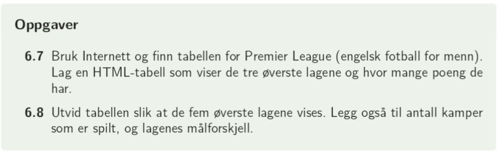
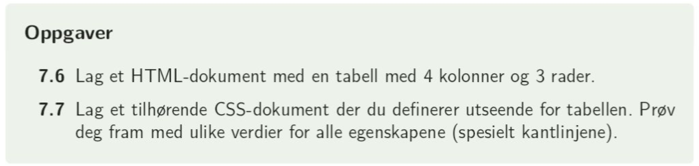

Hva er en tabell? En strukturert oversikt over informasjon i rader og kolonner, f.eks. følgende kvittering
| Matvare | Antall | Pris per enhet |
|---|---|---|
| Melk | 3 | 15 |
| Brød | 2 | 30 |
| Kaffe | 1 | 55 |
| Bananer | 10 | 2.50 |
I tabellen over er det 3 * 5 = 15 ulike celler. Hver celle er representert ved taggene < th > < /th > (overskrifter) eller < td > < /td > (vanlige celler).
Cellene er orientert i rader, der hver rad er representert ved < tr > < /tr >.
Hele tabellen angis av taggene < table > < /table > slik at koden for hele tabellen er:
< table >
< tr > < th > Matvare < /th > < th > Antall < /th > < th > Pris per enhet < /th > < /tr >
< tr > < td > Melk < /td > < td > 3 < /td > < td > 15 < /td > < /tr >
< tr > < td > Brød < /td> < td > 2 < /td > < td > 30 < /td > < /tr >
< tr > < td > Kaffe < /td> < td > 1 < /td > < td > 55 < /td > < /tr >
< tr > < td > Bananer < /td > < td > 10 < /td > < td > 2.50 < /td > < /tr >
< /table >
I en tabell vil vi gjerne ha kantlinjer. For å få til dette i css bruker vi
table, th, td{
border: 1px solid black;
border-collapse: collapse;
}
Legg merke til at dette angis både for tabellen som helhet (table) og for cellene (th og td). Border-collapse brukes for å ikke få dobbelt sett med kantlinjer.
Vi kan også bruke klasser/ider til å angi spesielle farger eller annet for enkeltceller.For eksempel kan alle overskrifter få rød farge:
< tr > < th class="overskrift" > Matvare < /th > < th class="overskrift" > Antall < /th > < th class="overskrift" > Pris per enhet < /th > < /tr >
Og i css:
.overskrift{
color: red;
}
Resultatet blir da:
| Matvare | Antall | Pris per enhet |
|---|---|---|
| Melk | 3 | 15 |
| Brød | 2 | 30 |
| Kaffe | 1 | 55 |
| Bananer | 10 | 2.50 |
Det hender vi ønsker å slå sammen celler i en tabell. Dette gjøres ved å bruke attributtene rowspan og colspan til en celle. Rowspan angir hvor mange rader en celle skal utgjøre mens colspan angir hvor mange kolonner den skal utgjøre. Dersom ikke annet er oppgitt, er rowspan="1" og colspan="1" standard.
Som et eksempel legger jeg ut koden for følgende tabell, der celle 1 har colspan="2", celle 6 har rowspan="2" og celle 7 har colspan="3":
| celle 1 | celle 2 | celle 3 | |
| celle 4 | celle 5 | celle 6 | celle 7 |
| celle 8 | |||
< table >
< tr > < td colspan="2" > celle 1 < /td > < td > celle 2 < /td > < td > celle 3 < /td > < /tr >
< tr > < td > celle 4 < /td > < td > celle 5 < /td > < td > celle 6 < /td > < td rowspan ="2" > celle 7 < /td >< /tr >
< tr > < td colspan ="3" > celle 8 < /td > < /tr >
< /table >
| hei | |
| hei | hei |
F.eks. å lage en tabell over deres egen timeplan. Dere vil da få bruk for både rowspan og colspan for å skille mellom enkelttimer og dobbelttimer, og bruk av klasser/ider for å få farget cellene til hvert fag.
1. I læreboka på side 57: oppgave 6.7 til 6.8

2. I læreboka på side 70: oppgave 7.6 og 7.7

3. Lag en nettside som viser timeplanen din. Bruk rowspan og colspan slik at dobbeltimer har dobbel høyde av midttimen og slik at lunchen går over alle fem dager.